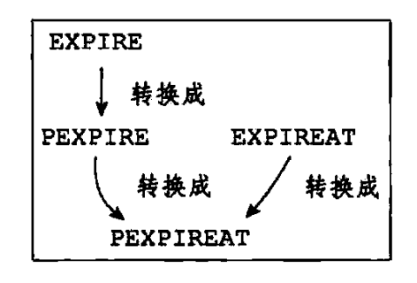
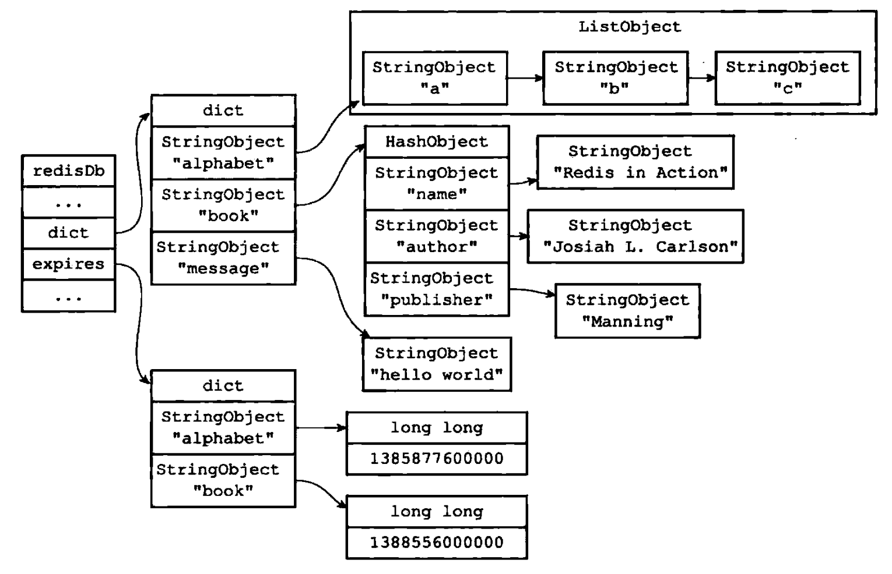
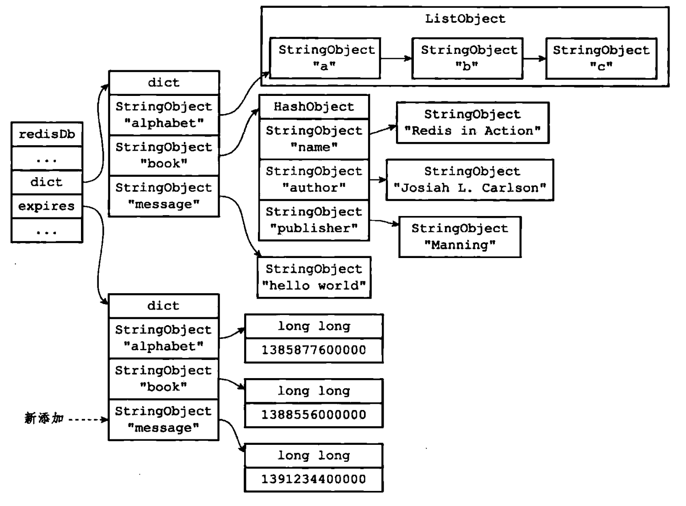
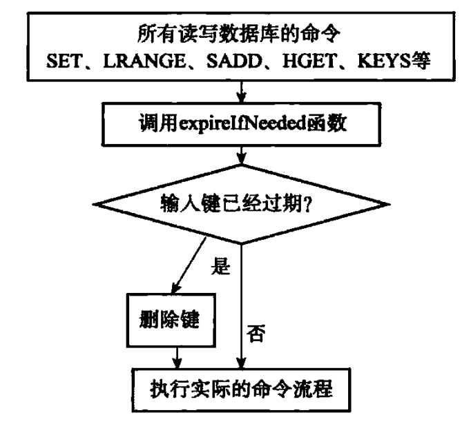
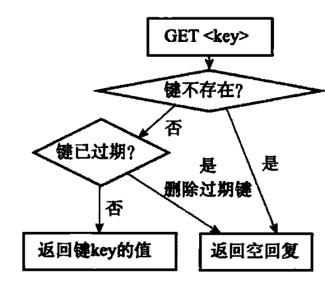
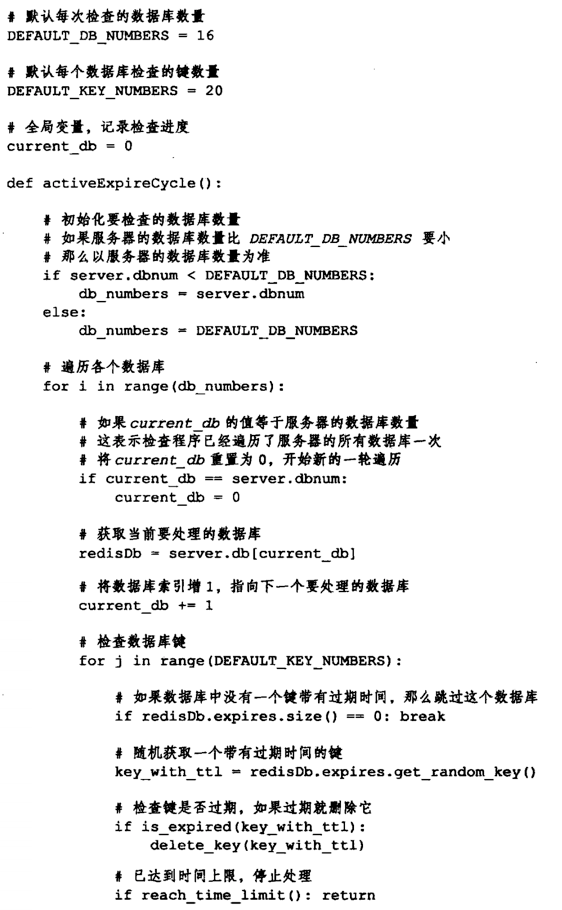
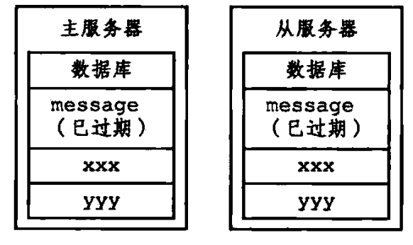
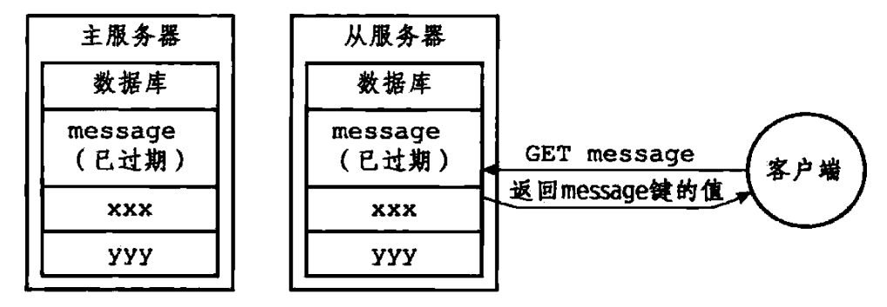
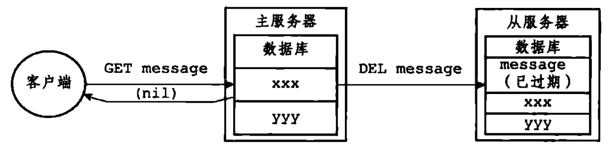
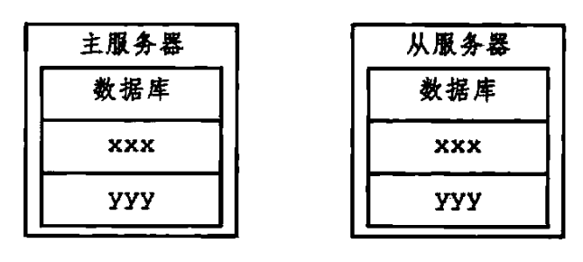

过期机制和内存淘汰策略 #
1 过期机制 #
1.1 设置键的生存时间或过期时间 #
1.1.1 设置过期时间 #
- Redis 中有四个不同的命令可以用于设置键的生存时间（键可以存在多久）或过期时间（键什么时候被删除）：
EXPIRE <key> <ttl>：命令用于将键key的生存时间设置为ttl秒。PEXPIRE <key> <ttl>：命令用于将 键key的生存时间设置为ttl毫秒。EXPIREAT <key> <timestamp>：命令用于将键key的过期时间设置为timestamp所指定的秒数时间戳。PEXPIREAT <key> <timestamp>：命令用于将键key的过期时间设置为timestamp所指定的毫秒数时间戳。
- 虽然有多种不同单位和不同形式的设置命令，但实际上
EXPIRE、PEXPIRE、EXPIREAT三个命令都是使用PEXIREAT命令来实现的，无论客户端执行的是以上四个命令中的哪一个，经过转换之后，最终的执行效果都和执行PEXPIREAT命令一样：-
首先，
EXPIRE命令可以转换为PEXPIRE：def EXPIRE(key, ttl_in_sec): # 将 TTL 转换成毫秒 ttl_in_ms = sec_to_ms(ttl_in_sec) PEXPIRE(key, ttl_in_ms) -
接着，
PEXPIRE命令又可以换成PEXPIREAT命令：def PEXPIRE(key, ttl_in_ms): # 获取以毫秒计算的当前 UNIX 时间戳 now_ms = get_current_unix_timestamp_in_ms() # 当前时间加上 TTL，得出毫秒格式的键过期时间 PEXPIREAT(key, now_ms + ttl_in_ms) -
并且，
EXPIREAT命令也可以转换成PEXPIREAT命令：def EXPIREAT(key, expire_time_in_sec): # 将过期时间从秒转换为好毫秒 expire_time_in_ms = sec_to_ms(expire_time_in_sec) PEXPIREAT(key, expire_time_in_ms) -
最终，
EXPIRE、PEXPIRE和EXPIREAT三个命令都会转换成PEXPIREAT命令来执行，如下图所示：
-
1.1.2 保存过期时间 #
-
redisDb结构的expires字典保存了数据库中所有键的过期时间，我们称这个字典为过期字典，其中redisDb的结构为：typedef struct redisDb { dict *dict; /* The keyspace for this DB */ dict *expires; /* Timeout of keys with a timeout set */ dict *blocking_keys; /* Keys with clients waiting for data (BLPOP) */ dict *ready_keys; /* Blocked keys that received a PUSH */ dict *watched_keys; /* WATCHED keys for MULTI/EXEC CAS */ struct evictionPoolEntry *eviction_pool; /* Eviction pool of keys */ int id; /* Database ID */ long long avg_ttl; /* Average TTL, just for stats */ } redisDb;- 过期字典的键是一个指针，这个指针指向键空间中的某个键对象。
- 过期字典的值是一个
long long类型的整数，这个整数保存了键所指向的数据库键的过期时间（一个毫秒精度的 UNIX 时间戳）。
-
如下图所示，过期字典保存了两个键值对：
-
第一个键值对的键为
alphabet键对象，值为 1385877600000，这表示数据库键alphabet的过期时间为 1385877600000（2013 年 12 月 1 日零时）。 -
第二个键值对的键为
book键对象，值为 1388556000000，这表示数据库键book的过期时间为 1388556000000（2014 年 1 月 1 日零时）。为了展示方便，下图中的键空间和过期字典中重复出现了两次
alphabet键对象和book对象，在实际中，键空间的键和过期字典的键都指向一个键对象，所以不会出现任何重复对象，也不会浪费任何空间。
-
-
当客户端执行
PEXPIREAT（或者其他三个会转换为PEXIREAT命令的命令）为一个数据库键设置过期时间时，服务器会在数据库的过期字典中关联给定的数据库键和过期时间，例如如果数据库当前的状态为上图所示，那么在服务器执行以下命令之后，过期字典将新增一个键值对，其中键为message对象，而值为 1391234400000（2014 年 2 月 1 日零时），如下图所示：redis> PEXPIREAT message 1391234400000
1.1.3 移除过期时间 #
-
PERSIST命令可以移除一个键的过期时间：redis> PEXPIREAT message 1391234400000 (integer) 1 redis> TTL message (integer) 63862337 redis> PERSIST message (integer) 1 redis> TTL message (integer) -1 -
PERSIST命令就是PEXPIREAT命令的反操作，PERSIST命令在过期字典中查找给定的键，并解除键和值（过期时间）在过期字典中的关联，例如，数据库当前状态如上面第二张图所示，那么当服务器执行以下命令之后，数据库将更新为如下图所示的状态：redis> PERSIST book (integer) 1
-
可以看到，当
PERSIST命令执行之后，过期字典中原来的book键值对消失了，这代表数据库键book的过期时间已经被移除。TTL 命令以秒为单位返回键的剩余生存时间，PTTL 以毫秒为单位返回键的剩余生存时间。
1.2 过期键删除策略 #
- 过期删除策略主要有三种，分别是定时删除、惰性删除、定期删除。
- Redis 服务器实际使用的是惰性删除和定期删除两种策略，通过配合使用这两种删除策略，服务器可以很好地在合理使用 CPU 时间和避免浪费内存空间之间取得平衡。
1.2.1 定时删除 #
1.2.1.1 含义 #
- 定时删除是指对于每一个设置了过期时间的
key都会创建一个定时器，一旦到达过期时间就立即删除。
1.2.1.2 优缺点 #
1.2.1.2.1 优点 #
- 该策略可以立即清除过期的数据，对内存较友好。
1.2.1.2.2 缺点 #
- 占用了大量的 CPU 资源去处理过期的数据，会影响 Redis 的吞吐量和响应时间。
1.2.2 惰性删除 #
1.2.2.1 含义 #
- 惰性删除是指当键的过期时间到达的时候，并不立即进行删除，而是当访问到这个键的时候，检查这个键是否过期，如果已过期就删除并返回
NULL。
1.2.2.2 实现原理 #
-
Redis 过期键的删除策略由
db.c/expireIfNeeded函数实现，expireIfNeeded函数的源码如下：int expireIfNeeded(redisDb *db, robj *key) { mstime_t when = getExpire(db,key); mstime_t now; if (when < 0) return 0; /* No expire for this key */ /* Don't expire anything while loading. It will be done later. */ if (server.loading) return 0; /* If we are in the context of a Lua script, we claim that time is * blocked to when the Lua script started. This way a key can expire * only the first time it is accessed and not in the middle of the * script execution, making propagation to slaves / AOF consistent. * See issue #1525 on Github for more information. */ now = server.lua_caller ? server.lua_time_start : mstime(); /* If we are running in the context of a slave, return ASAP: * the slave key expiration is controlled by the master that will * send us synthesized DEL operations for expired keys. * * Still we try to return the right information to the caller, * that is, 0 if we think the key should be still valid, 1 if * we think the key is expired at this time. */ if (server.masterhost != NULL) return now > when; /* Return when this key has not expired */ if (now <= when) return 0; /* Delete the key */ server.stat_expiredkeys++; propagateExpire(db,key); notifyKeyspaceEvent(REDIS_NOTIFY_EXPIRED, "expired",key,db->id); return dbDelete(db,key); } -
所有读写数据库的 Redis 命令在执行之前都会调用
expireIfNeeded函数对输入键进行检查：-
如果输入键已经过期，那么
expireIfNeeded函数将输入键从数据库中删除。 -
如果输入键未过期，那么
expireIfNeeded函数不作任何动作。
-
-
expireIfNeeded函数就像一个过滤器，他可以在命令真正执行之前，过滤掉过期的输入键，从而避免命令接触到过期键。 -
每个被访问的键都可能因为过期而被
expireIfNeeded函数删除，所以每个命令的实现函数都必须能同时处理键存在以及键不存在两种情况：-
当键存在时，命令按照键存在的情况执行。
-
当键不存在或者因为过期而被
expireIfNeeded函数删除时，命令按照键不存在的情况执行。
-
1.2.2.3 优缺点 #
1.2.2.3.1 优点 #
- 不会占用过多的 CPU，保证 Redis 的执行效率。
1.2.2.3.2 缺点 #
- 会有大量的过期键还保存在内存中，占用额外的内存，并且如果一个过期键不会再访问了，那么这个过期键就会一直保存在内存中，可以看作是内存泄漏。
1.2.3 定期删除 #
1.2.3.1 含义 #
- 定期删除是前两种策略的一种折中方案。
- 定期删除会每隔一段时间（默认是 1s 扫描 20 次），从数据库中取出一定数量的随机键进行检查（默认是 20 个），然后删除其中的过期键，如果其中已经过期的键超过 25%，那么就立即再次执行一次扫描删除操作。
- 定期删除会通过限制删除操作执行的时长和频率来防止无限制的执行定期删除操作导致 CPU 占用的影响。
1.2.3.2 实现原理 #
-
Redis 过期键的定期删除策略由
src/redis.c/activeExpireCycle函数实现，每当 Redis 的服务周期性操作src/redis.c/serverCron函数执行时，activeExpireCycle函数就会被调用，他在规定的时间内，分多次遍历服务器中的各个数据库，从数据库的expires字典中随机检查一部分键的过期时间，并删除其中的过期键，整个过程可用伪代码描述如下：
-
activeExpireCycle函数的工作模式可以总结如下：- 函数每次运行时，都从一定数量的数据库中取出一定数量的随机键进行检查，并删除其中的过期键。
- 全局变量
current_db会记录当前activeExpireCycle函数检查的进度，并在下一次activeExpireCycle函数调用时，接着上一次的进度进行处理，例如，当前activeExpireCycle函数在遍历 10 号数据库时返回了，那么下次activeExpireCycle函数执行时，将从 11 号数据库开始查找并删除过期键。 - 随着
activeExpireCycle函数的不断执行，服务器中的所有数据库都会被检查一遍，这时函数将current_db变量置为 0，然后再开始新一轮的检查工作。
1.2.3.3 优缺点 #
1.2.3.3.1 优点 #
- 不会占用过多的 CPU，而且可以防止内存浪费。
1.2.3.3.2 缺点 #
- 如果定期删除执行的时长和频率不合理，就会退化为定时删除，占用过多的 CPU 时间。
1.3 RDB、AOF 和主从复制功能对过期键的处理 #
1.3.1 RDB 对过期键的处理 #
对于 RDB 的相关介绍可参考 2.1 RDB。
1.3.1.1 生成 RDB 文件 #
- 在执行
SAVE命令或者BGSAVE命令创建一个新的 RDB 文件时，程序会对数据库中的键进行检查，已过期的键不会被保存到新创建的 RDB 文件中。 - 因此，数据库中包含过期键不会对生成新的 RDB 文件造成影响。
1.3.1.2 载入 RDB 文件 #
- 在启动 Redis 服务器时，如果服务期开启了 RDB 功能，那么服务器将对 RDB 文件进行载入：
- 如果服务器以主服务器模式运行，那么在载入 RDB 文件时，程序会对文件中保存的键进行检查，未过期的键会被载入到数据库中，而过期键则会被忽略，所以过期键对载入 RDB 文件的主服务器不会造成影响。
- 如果服务器以从服务器模式运行，那么在载入 RDB 文件时，文件中保存的所有键，无论是否过期，都会被载入到数据库中，不过，因为主从服务器在进行数据同步的时候，从服务器的数据库就会被清空，所以一般来讲，过期键对载入 RDB 文件的从服务器也不会有影响。
1.3.2 AOF 对过期键的处理 #
对于 AOF 的相关介绍可参考 2.2 AOF。
1.3.2.1 AOF 文件写入 #
- 当服务器以 AOF 持久化模式运行时，如果数据库中的某个键已经过期，但他还没有被惰性删除或定期删除，那么AOF 文件不会因为这个过期键而产生任何影响。
- 当过期键被惰性删除或者定期删除之后，程序会向 AOF 文件追加（
append）一条DEL命令，来显式地记录该键已被删除。 - 例如，如果客户端使用
GET message命令试图访问过期的message键，那么服务器将执行以下三个动作：- 从数据库中删除
message键。 - 追加一条
DEL message命令到 AOF 文件。 - 向执行
GET命令的客户端返回空回复。
- 从数据库中删除
1.3.2.2 AOF 重写 #
- 和生成 RDB 文件类似，在执行 AOF 重写的过程中，程序会对数据库中的键进行检查，已过期的键不会被保存到重写后的 AOF 文件中。
- 因此，数据库中包含过期键不会对生成新的 AOF 文件造成影响。
1.3.3 主从复制对过期键的处理 #
- 当服务器运行在主从复制模式下时，从服务器的过期键删除动作由主服务器控制：
- 主服务器在删除一个过期键之后，会显式地向所有从服务器发送一个
DEL命令，告知从服务器删除这个过期键。 - 从服务器在执行客户端发送的读命令时，即使碰到过期键也不会将过期键删除，而是继续向处理未过期的键一样来处理过期键。
- 从服务器只有在接到主服务器发来的
DEL命令之后，才会删除过期键。
- 主服务器在删除一个过期键之后，会显式地向所有从服务器发送一个
- 通过由主服务器统一地删除过期键，可以保证主从服务器数据的一致性，也正是因为这个原因，当一个过期键仍然存在于主服务器的数据库时，这个过期键在从服务器里的复制品也会继续存在。
- 具体的示例如下：
-
假如有一对主从服务器，他们的数据库中都保存着同样的三个键
message、xxx和yyy，其中message为过期键，如下图所示：
-
如果这时有客户端向从服务器发送命令
GET message，那么从服务器将发现message键已经过期，但从服务器并不会删除message键，而是继续将message键的值返回给客户端，就好像message键并没有过期一样，如下图所示：
-
假设在此之后，有客户端向主服务器发送
GET message，那么主服务器将发现键message已经过期，因此，主服务器会删除message键，向客户端返回空回复，并向从服务器发送DEL message命令，如下图所示：
-
从服务器在接收到主服务器发来的
DEL message命令之后，也会从数据库中删除message键，在这之后，主从服务器都不再保存过期键message了，如下图所示：
-
2 内存淘汰策略 #
2.1 为什么需要内存淘汰策略 #
- 因为不管是定期采样删除还是惰性删除都不是一种完全精准的删除，就还是会存在
key没有被删除掉的场景，所以就需要内存淘汰策略进行补充。
2.2 含义 #
- 内存淘汰策略针对的是内存不足的情况下的一种 Redis 处理机制，例如，当前的 Redis 存储已经超过内存限制了，然而我们的业务还在继续往 Redis 里面追加缓存内容，这时候 Redis 的淘汰机制就起到作用了。
2.3 Redis 常见的六种淘汰策略 #
- noeviction：不删除策略，达到最大内存限制时，如果需要更多内存，直接返回错误信息。
- alllkeys-lru：所有
key通用，达到最大内存限制时，如果需要更多内存，优先删除最近最少使用（Least Recent Used, LRU）的key。 - volatile-lru：只限于设置了过期时间的部分，达到最大内存限制时，如果需要更多内存，优先从设置了过期时间的
key中选择最近最少使用的key进行删除。 - allkeys-random：所有
key通用，达到最大内存限制时，如果需要更多内存，随即删除一部分key。 - volatile-random：只限于设置了过期时间的部分，达到最大内存限制时，如果需要更多内存，优先从设置了过期时间的
key中随机选择一部分key进行删除。 - volatile-ttl：只限于设置了过期时间的部分，达到最大内存限制时，如果需要更多内存，优先删除剩余时间（Time to Live, TTL）短的
key。
参考文献 #
- 理解 Redis 的内存回收机制和过期淘汰策略。
- 最详细的一篇关于 Redis 的过期键机制介绍。
- redis 设计与实现（第二版）。
- 彻底弄懂 Redis 的内存淘汰策略。
- Redis 的过期策略&内存淘汰策略。